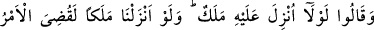
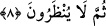
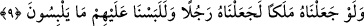
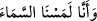

mecâzî mânâda kullanılmış olma ihtimâlini ortadan kaldırmak içindir. Nitekim “” “Biz göğü yokladık...” (el-Cinn, 72/9) âyetinde mecâzî mânâda
kullanılmıştır.
Şüphesiz bir kişi Allah’ın tevfikinden mahrum kalır da görmediği hakkı yalanlarsa,
gördüğü ve hissettiği hakkı da inkâr eder. Gözüyle gördüğü halde, sırf hissî sebeplerle
hakikatı yalanlar. Şöyle ki; inkârcılar Allah dostlarının ve salih kişilerin havada
uçtuklarını görseler: “Bu, sihirdir ve bunlar da şeytanlardır.” derlerdi.
8. Muhammed’e (görebileceğimiz) bir melek indirilseydi ya! dediler. Eğer biz öyle
bir melek indirseydik elbette iş bitirilmiş olur, artık kendilerine göz bile
açtırılmazdı.
“O’na bir melek indirilmeli değil miydi?” dediler. Müşriklerin nübüvvet konusunda
söyledikleri önceki âyette zımnen, bu âyette açıkça kötülenmektedir. Yani onlar: “Hz.
Muhammed’e bizim görebileceğimiz ve bize onun peygamber olduğunu söyleyen bir
melek indirilmeli değil miydi?” dediler.
“Eğer biz melek indirseydik, iş bitirilmiş olurdu.” Şayet biz onların istedikleri gibi
aslî görünüşünde bir melek inidirseydik, heybet ve şiddetten ötürü ona bakmaya güçleri
yetmezdi. Tabiatıyle melek indirildikten sonra da iş bitirilmiş olur, yani tamâmen helâk
edilirlerdi. “Artık onlara hiç mühlet verilmezdi.” Melek indirildikten sonra inkârcılara
göz açıp kapayıncaya kadar bile süre tanınmazdı.
Âyetteki “  ” sonra, artık lafzı, “işin bitirilmesi” ile “süre verilmemesi” arasındaki
” sonra, artık lafzı, “işin bitirilmesi” ile “süre verilmemesi” arasındaki
vakit olmadığını ifade etmektedir. Çünkü; “süre verilmemesi”, “işin bitirilmesi” nden
daha şiddetli kılınmıştır. Çünkü hiç beklenmedik bir vakitte ansızın azabın gelmesi,
azabın kendisinden daha şiddetli ve ağırdır.
9. Eğer peygamberi bir melek kılsaydık muhakkak ki onu insan sûretine sokar
onları yine düşmekte oldukları kuşkuya düşürürdük.
“Eğer Peygamberi” onların taleb ettikleri Hz. Muhammed’in nübüvvetine şâhitlik
edecek olan bir “melek yapsaydık.” “Yine bir insan sûretine sokardık.” O meleği
insan sûretine girdirirdik. Çünkü insanlardan hiç biri melekleri aslî suretinde görmeye
güç yetiremezler. Nitekim Cebrâil (a.s.) da, Nebi (s.a.)’in huzuruna Dihyetü’l-Kelbî